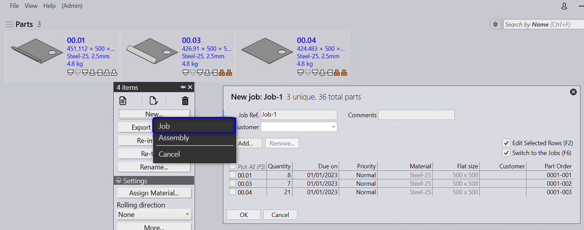
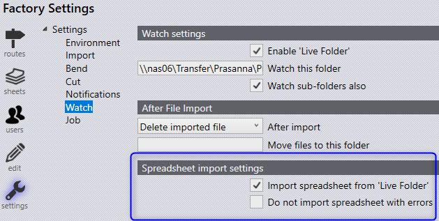

● Select a single part or in batches and right click to open the new Job command panel.
● Choose New Job. The new job dialog pops up with the selected parts.
● Job Ref is auto populated whereas Customer, Comments field can be filled in by the user if required.

● Spreadsheets can be imported by dropping it on the jobs page or using the open • import jobs command.
● Browse and select one or more CSV, xls or xlsx files with the Job parts.
● The spreadsheet can also be imported via the Live Folder.
Check the Import Spreadsheet from 'Live Folder' checkbox to enable the job import from spreadsheet dropped to the Live Folder.

Like the part import, the job import via Live Folder is a background activity and Praxis doesn’t prompt user on errors/warnings (like the part is missing, material is unspecified etc.,). Check the Do not import spreadsheet with errors to ignore such spreadsheets 1.
The Job is planned in one of the following ways to extract a higher throughput in lesser work steps.
● Mixed mode nesting and automated nest repacking
● Part level planning with part pull-back
● Interactive Nesting
● Pull scheduling (nest – on – demand)
Refer Planning Jobs Section for more details
● Once the Job is planned, parts are queued up for Nesting.
● Praxis engine complete the nest and layout starts to appear.

The nest outputs are saved to the individual folders named after the nested layout.